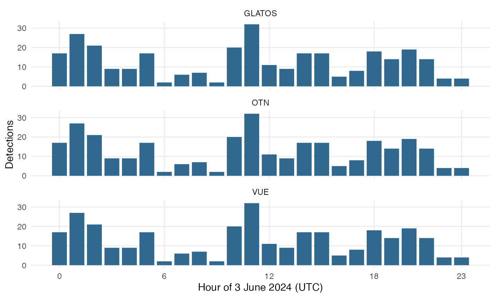
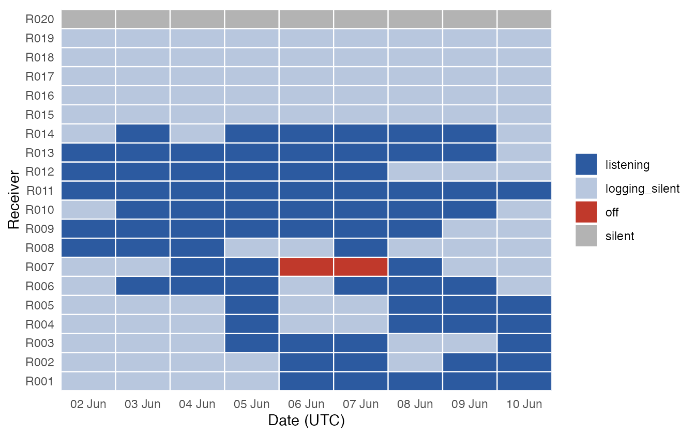
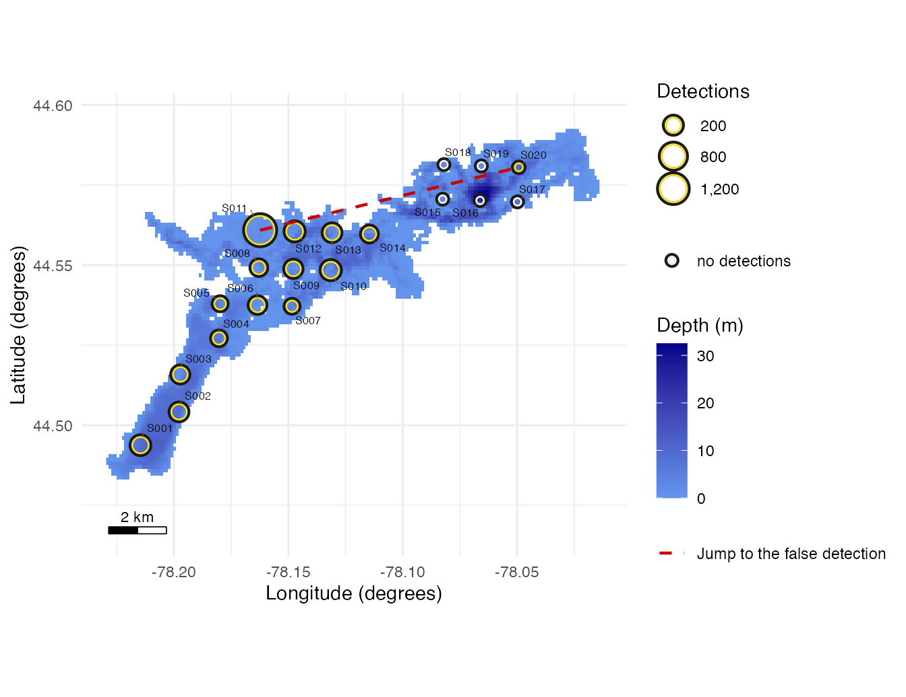
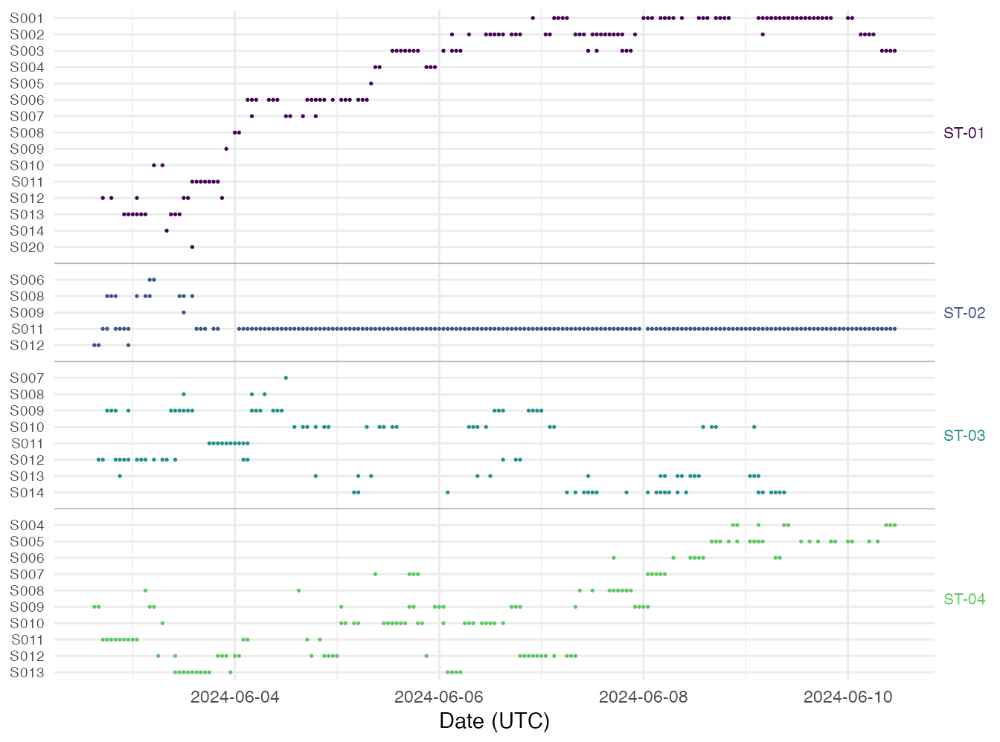
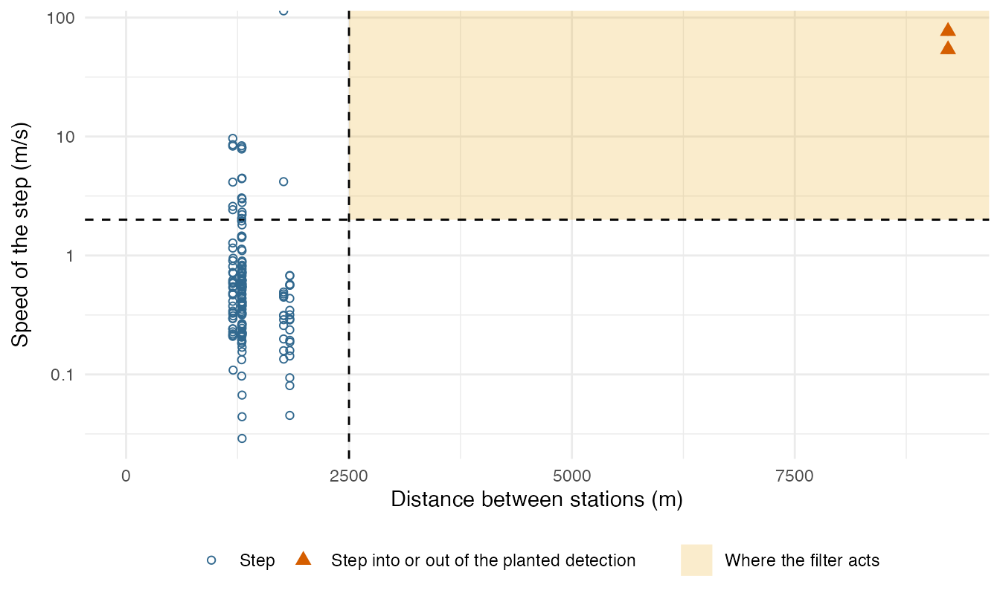
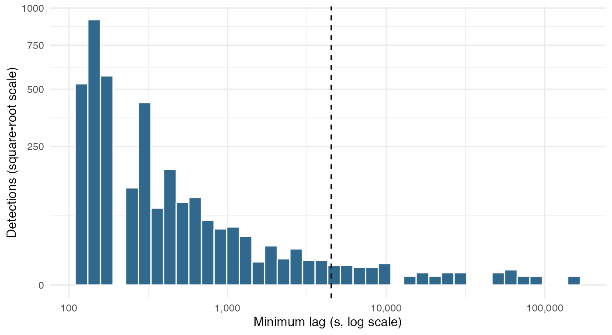

Base processing: read, check, and filter telemetry data
Source:vignettes/reading-files.Rmd
reading-files.RmdThe same detections reach a study in different layouts: an OTN extract, a GLATOS export, a VUE export of the receivers. The import functions read each of them into the same columns, with every time in UTC (Figure 1). Get started runs the whole pipeline once; this page goes deep on the file formats, the checks and the filters.
library(detqc)
# Locate the example files included with the package
extdata_dir <- system.file("extdata", package = "detqc")
in_file <- function(name) file.path(extdata_dir, name)
# Read 3 June 2024 from each of the three exports
one_day <- list(
OTN = read_detections(in_file("stoney_otn.csv")),
GLATOS = read_detections(in_file("stoney_detections.csv"),
cut = list(from = "2024-06-03", to = "2024-06-04")),
VUE = read_detections(in_file("stoney_vue.csv"))
)
#> read_detections(): the cut kept 309 of 3,297 detections in 1 file.
vapply(one_day, nrow, 1L)
#> OTN GLATOS VUE
#> 309 309 309
# Take the UTC hour of each detection, by export
per_hour <- do.call(rbind, lapply(names(one_day), function(export) {
data.frame(export = export,
hour = as.integer(format(one_day[[export]]$datetime, "%H",
tz = "UTC")))
}))
# Draw the detections per hour, one panel per export
ggplot2::ggplot(per_hour, ggplot2::aes(hour)) +
ggplot2::geom_bar(fill = "#31688E", width = 0.85) +
ggplot2::facet_wrap(~export, ncol = 1) +
ggplot2::scale_x_continuous(breaks = c(0, 6, 12, 18, 23)) +
ggplot2::labs(x = "Hour of 3 June 2024 (UTC)", y = "Detections") +
theme_positionr() +
ggplot2::theme(panel.grid.minor = ggplot2::element_blank())
Figure 1. Detections per hour of 3 June 2024, as read from each of the three exports: OTN 309, GLATOS 309, VUE 309.
Supported file formats
Each import function takes its column names, types and time zones
from a column map that comes with the package. With
format = "auto", the default,
read_detections() picks one of these from the header of the
file:
-
"otn": an OTN detection extract, CSV or Parquet, matched to animals, qualified, unqualified or sentinel; -
"glatos": a GLATOS detection export; -
"vue": a VUE or Fathom detection export with the VUE header; -
"vdat": a Fathom VDAT CSV, from the VRL or VDAT file of a VR2Tx or NexTrak receiver.
The VRL or VDAT file itself is binary: export it to a VDAT CSV with Fathom Connect first. Unzip a zip archive, as OTN publishes some extracts, before you read it.
read_receiver_logs() reads the receiver’s own status
records from the same VDAT CSV (see Receiver
logs).
read_deployments() reads OTN deployment sheets (the
instrument deployment short form, CSV or Excel), the OTN deployment CSV,
OTN AAT receiver files, the OTN moorings receivers file and the OTN
stations-receivers file, GLATOS receiver location files and the
deployment sheet of a GLATOS project workbook.
read_animals() reads the OTN tagging sheet, the OTN tag
release file, the tagging sheet of a GLATOS workbook and GLATOS
detection exports. Excel files need the readxl package.
Both take format = "auto" by default and pick the OTN or
GLATOS map from the header. The OTN tagging template often leaves
ANIMAL_ID blank while the OTN matched extract names animals
by catalogNumber: read such a sheet with
missing_id = "transmitter", and the release filters match
the extract’s detections to it by transmitter and release time.
# List the detection file formats, and show the GLATOS map
unique(column_map("detections")$format)
#> [1] "otn" "glatos" "vue" "otn_qualified"
#> [5] "vdat" "detqc"
column_map("detections", "glatos")[, c("target", "source", "type", "tz")]
#> target source type tz
#> 1 datetime detection_timestamp_utc datetime UTC
#> 2 receiver_serial receiver_sn character
#> 3 transmitter transmitter_codespace;transmitter_id character
#> 4 animal_id animal_id character
#> 5 station_id station character
#> 6 deploy_lat deploy_lat numeric
#> 7 deploy_lon deploy_long numeric
#> 8 sensor_value sensor_value numeric
#> 9 sensor_unit sensor_unit character
#> 10 species common_name_e character
#> 11 tag_model tag_model characterEach row maps one column of the file (source) to one
column read_detections() returns (target). A
source with a ; joins two columns: the GLATOS
transmitter_codespace and transmitter_id
become one transmitter, “A69-9002-61002”. The fifth map,
otn_qualified, reads an OTN extract not matched to animals,
so its animal_id is NA.
One study, three exports
The three files of Figure 1 hold 3 June 2024 of the Stoney study as an OTN extract, a GLATOS export and a VUE export. The code below asks which format each was read as, and whether the reads agree.
# Show the format recognised in each file
vapply(one_day, function(det) attr(det, "source")[[1]]$format, "")
#> OTN GLATOS VUE
#> "otn" "glatos" "vue"
# Test that the OTN and VUE reads give the same times and transmitters
otn <- one_day$OTN
vue <- one_day$VUE
identical(otn$datetime, vue$datetime) && identical(otn$transmitter,
vue$transmitter)
#> [1] TRUE
head(otn[, c("datetime", "receiver_serial", "transmitter", "animal_id",
"station_id")], 3)
#> datetime receiver_serial transmitter animal_id station_id
#> 1 2024-06-03 00:00:26 R013 A69-1601-61001 ST-01 S013
#> 2 2024-06-03 00:03:15 R013 A69-1601-61001 ST-01 S013
#> 3 2024-06-03 00:05:29 R013 A69-1601-61001 ST-01 S013
# Count the rows of the VUE export that name no animal
sum(is.na(vue$animal_id))
#> [1] 309A VUE export does not know which animal carries each transmitter, so
animal_id is missing on every row; detset()
fills it from the animals table.
A file with its own column names
Given a lab’s own detection file, which rarely matches any export,
read_detections() stops and names the columns it found:
# Write a detection file in a lab's own layout, in local time
own_file <- file.path(tempdir(), "my_detections.csv")
writeLines(c(
"Date_Local,Rx,TagCode,Fish",
"2024-06-03 09:06:06,R011,A69-9002-61002,ST-02",
"2024-06-03 18:45:59,R011,A69-9002-61002,ST-02",
"2024-06-04 06:12:40,R013,A69-1601-61001,ST-01"
), own_file)
# Read it: read_detections() stops and names the columns it found
try(read_detections(own_file))
#> Error in read_detections(own_file) :
#> The format of my_detections.csv is not one read_detections() knows: no
#> format's column map finds two of `datetime`, `transmitter` and
#> `receiver_serial` in its header. The file has: date_local, rx,
#> tagcode, fish. Give a full map as `col_map`, or `format` and pairs.A column map gives one row per column you have, with the column it
becomes and its type; every other column is kept, its name in lower case
with _ between words.
# Map each column of the file to the column it becomes, and its type
my_map <- data.frame(
target = c("datetime", "receiver_serial", "transmitter", "animal_id"),
source = c("Date_Local", "Rx", "TagCode", "Fish"),
type = c("datetime", "character", "character", "character")
)
# Read the file through the map, its times in Eastern time
read_detections(own_file, format = "vue", col_map = my_map,
tz = "America/Toronto")
#> datetime receiver_serial transmitter animal_id station_id
#> 1 2024-06-03 13:06:06 R011 A69-9002-61002 ST-02 <NA>
#> 2 2024-06-03 22:45:59 R011 A69-9002-61002 ST-02 <NA>
#> 3 2024-06-04 10:12:40 R013 A69-1601-61001 ST-01 <NA>
#> sensor_raw sensor_value sensor_unit
#> 1 NA NA <NA>
#> 2 NA NA <NA>
#> 3 NA NA <NA>With a data frame as col_map, your map replaces the
packaged one; give format = "vue" for a plain CSV. To start
from a packaged map, copy its rows with column_map() and
change source. When the format reads every column but a
few, give those few as pairs, such as
col_map = c(receiver_serial = "Rx"); they are merged into
the format’s map. read_deployments() and
read_animals() take col_map too;
?read_detections and ?column_map give the
rules.
Time zones
Every positionR function expects UTC. OTN, GLATOS and VUE exports are
written in UTC, and a header or a stamp that states its offset, such as
Date and Time (UTC-04:00) or
2024-05-01T10:00:00-04:00, is read at that offset. A file
kept in local time needs tz, a zone name from
OlsonNames(): above, tz = "America/Toronto"
read 09:06 on 3 June, Eastern Daylight Time, as 13:06 UTC. The
deployment and tagging import functions take the same argument.
Daylight saving causes two problems in local files. A clock time
inside the spring gap, which never happened in that zone, stops
read_detections():
# Write and read a local time inside the spring daylight-saving gap
gap_file <- file.path(tempdir(), "local_time.csv")
writeLines(c("Date_Local,Rx,TagCode,Fish",
"2024-03-10 02:30:00,R011,A69-9002-61002,ST-02"), gap_file)
try(read_detections(gap_file, format = "vue", col_map = my_map,
tz = "America/Toronto"))
#> Error in read_detections(gap_file, format = "vue", col_map = my_map, tz =
#> "America/Toronto") :
#> detections$datetime: 1 clock time did not occur in America/Toronto (the
#> spring daylight-saving gap), such as "2024-03-10 02:30:00". The file's
#> clock does not follow America/Toronto; read it with a fixed-offset
#> zone, such as "Etc/GMT+5" for a receiver clock kept on UTC-5 all year.The file’s clock did not follow the zone you gave: read a receiver
whose clock stayed on standard time all year with a fixed offset, such
as tz = "Etc/GMT+5" for UTC-5 (the sign is reversed in
these names). A clock time in the repeated autumn hour is read as
standard time, with a warning. Once the data are in a detection set, the
non_utc and dst_jump checks of
check_detset() look for offsets the import functions could
not see.
Several files, and studies too large for memory
read_detections() reads many files in one call and
stacks them into one table, with the file of each row in
source_file. Its cut argument keeps only the
rows you ask for as each file is read, so memory holds one whole file at
a time rather than the whole study.
# Read two files in one call; source_file names each row's file
stacked <- read_detections(c(in_file("stoney_otn.csv"),
in_file("stoney_vue.csv")))
table(stacked$source_file)
#>
#> stoney_otn.csv stoney_vue.csv
#> 309 309cut takes from and to, times
in UTC, and transmitters, the codes to keep. The code below
reads 5 and 6 June of one transmitter and counts what the cut left
out:
# Read 5 and 6 June of one transmitter, cut as the file is read
two_days <- read_detections(in_file("stoney_detections.csv"),
cut = list(from = "2024-06-05", to = "2024-06-07",
transmitters = "A69-9002-61003"))
#> read_detections(): the cut kept 107 of 3,297 detections in 1 file.
range(two_days$datetime)
#> [1] "2024-06-05 04:55:00 UTC" "2024-06-06 23:25:56 UTC"
# Count the rows read, kept, and outside the cut
cut_record <- attr(two_days, "source")[[1]]
cut_record[c("rows_read", "rows", "rows_outside_cut")]
#> $rows_read
#> [1] 3297
#>
#> $rows
#> [1] 107
#>
#> $rows_outside_cut
#> [1] 3190The source attribute has one record per file: the file,
the format, the time zone and the rows read and kept.
detset() copies these records into the detection set, and
the processing report lists them.
Receiver files: VDAT
From a Fathom VDAT CSV, read_detections() reads the
detections and the sensor detections, and keeps the receiver’s own
transmitter settings in an attribute. The example is the first 150
detections of receiver R011:
# Read the VDAT file of receiver R011
vdat <- read_detections(in_file("stoney_vdat.csv"))
#> stoney_vdat.csv: 5 DET records repeat a DET_SENS record and were dropped.
table(vdat$transmitter)
#>
#> A69-1601-61001 A69-1601-61004 A69-9002-61002 A69-9002-61003
#> 31 55 54 10
# Show the receiver's own transmitter settings
attr(vdat, "receiver_transmitters")
#> receiver_serial receiver_model datetime transmitter
#> 1 R011 VR2Tx-69 2024-06-01 14:00:00 A69-1601-60011
#> power_level min_delay max_delay
#> 1 VERY_HIGH 540 660A VDAT file keeps fractions of a second, while GLATOS, OTN and VUE exports write whole seconds, so one detection read from both differs by a fraction of a second. Below, the Stoney export is stacked with a copy of itself half a second later, as a VDAT file of the same receivers would give it:
# Read the receivers and tagging records
deployments <- read_deployments(in_file("stoney_receivers.csv"),
format = "glatos")
animals <- read_animals(in_file("stoney_detections.csv"), format = "glatos")
# Read the export, and make a copy of it half a second later
whole <- read_detections(in_file("stoney_detections.csv"))
fraction <- whole
fraction$datetime <- fraction$datetime + 0.5
# Build one detection set holding both
dets_doubled <- detset(rbind(whole, fraction), deployments, animals)filter_duplicates() runs with exact matching and with
tolerance_s = 1.
# Count the detections removed by the last step of the log
removed <- function(dets) tail(detset_log(dets)$removed, 1)
# Count the copies removed with exact matching, and within 1 s
c(exact = removed(filter_duplicates(dets_doubled)),
tolerance_1s = removed(filter_duplicates(dets_doubled, tolerance_s = 1)))
#> exact tolerance_1s
#> 0 3297Only the tolerance catches the copies. Keep tolerance_s
below the shortest delay between transmissions of your tags, so that two
real transmissions are never merged.
Receiver logs
A VDAT CSV also holds the receiver’s own status records: the
temperature, the noise, the tilt, the pulses counted and the battery,
with events such as a reboot or a download.
read_receiver_logs() reads them into one table, one row per
record. A DIAG record also counts the detections the
receiver decoded, of every transmitter it heard, in
log_detections.
# Read the logs of the example receivers, one file per receiver
log_files <- list.files(in_file("receiver_logs"), full.names = TRUE)
logs <- read_receiver_logs(log_files)
# Count the records by type
table(logs$record_type)
#>
#> DIAG EVENT EVENT_INIT EVENT_OFFLOAD HEALTH_VR2TX
#> 4537 1 19 19 187
#> TEMP
#> 4537The synthetic logs cover the 19 VR2Tx receivers of the example; R020, a VR2W, has no log.
Given these logs, audit_listening() reads them on each
full day on which a receiver has no detection in the set. A day with no
status record is off: the receiver was not running, and the
day counts as not listening. A day with status records and no detection
counted is deaf when a reference tag was expected and not
heard, which counts as not listening, and logging_silent
when none was expected, which counts as listening. A day on which the
receiver’s own DIAG records counted detections is
listening: the receiver decoded a transmitter that day, of
this project or another. ?audit_listening gives every
status.
# Build the set, and audit each receiver-day with the logs
dets_logged <- detset(read_detections(in_file("stoney_detections.csv")),
deployments, animals)
dets_logged <- audit_listening(
dets_logged, known_listening = unique(deployments$receiver_serial),
logs = logs
)
# Count receiver-days by status
table(dets_logged$listening$status)
#>
#> listening logging_silent off silent
#> 77 92 2 9
# Draw one tile per receiver and day, coloured by status
ggplot2::ggplot(dets_logged$listening,
ggplot2::aes(date, receiver_serial, fill = status)) +
ggplot2::geom_tile(colour = "white", linewidth = 0.4) +
ggplot2::scale_fill_manual(values = c(listening = "#2C5AA0",
logging_silent = "#B8C7DE",
silent = "grey70", off = "#C0392B"),
name = NULL) +
ggplot2::scale_x_date(date_labels = "%d %b", date_breaks = "1 day",
expand = c(0, 0)) +
ggplot2::labs(x = "Date (UTC)", y = "Receiver") +
theme_positionr() +
ggplot2::theme(panel.grid = ggplot2::element_blank())
Figure 2. Status of each receiver and day from
audit_listening() with the synthetic receiver logs, 180
receiver-days.
R007 logged nothing on two days, so the audit reads them as days it
did not listen. R020 has no log, so its days stay silent.
This example has no reference tags, so no day can be deaf;
with your own data give them in reference_tags.
as_detfield_input() hands the off and
deaf days, as not listening, to the detfield
R package.
A filter run before the audit removes detections that a working receiver decoded. The code below filters first, the order Get started avoids, then audits with and without the logs.
# Remove the post-release and isolated detections before the audit
dets_filtered <- filter_post_release(dets_logged, hours = 6)
dets_filtered <- filter_min_lag(dets_filtered, max_lag_s = 4500)
# Audit the filtered set without the logs, then with them
working_rx <- unique(deployments$receiver_serial)
no_logs <- audit_listening(dets_filtered, known_listening = working_rx)
with_logs <- audit_listening(dets_filtered, known_listening = working_rx,
logs = logs)
# List the quiet days that the logs' detection counts keep listening
quiet_heard <- with_logs$listening$status == "listening" &
with_logs$listening$detections == 0
data.frame(with_logs$listening[quiet_heard, c("receiver_serial", "date")],
without_logs = no_logs$listening$status[quiet_heard],
with_logs = with_logs$listening$status[quiet_heard])
#> receiver_serial date without_logs with_logs
#> 17 R002 2024-06-09 silent listening
#> 40 R005 2024-06-05 silent listening
#> 51 R006 2024-06-07 silent listening
#> 64 R008 2024-06-02 silent listening
#> 83 R010 2024-06-03 silent listening
#> 89 R010 2024-06-09 silent listening
#> 114 R013 2024-06-07 silent listening
#> 119 R014 2024-06-03 silent listeningOn these eight receiver-days the filters removed every detection in the set, and the receiver’s own count shows it heard. A receiver counts every transmitter it decodes, whatever the project, so the logs also recover the days on which it heard only tags an export left out. Audit before you filter, and give the logs where you have them.
A NexTrak receiver writes its status as DIAG_NEXTRAK
records every 10 minutes, with the noise in dB, where a VR2Tx writes
DIAG hourly with the noise in mV.
read_receiver_logs() reads both. The package includes a
synthetic NexTrak log of one receiver over three days.
# Read the included NexTrak log
nextrak <- read_receiver_logs(in_file("nextrak_receiver_log.csv"))
# Count the records by type
table(nextrak$record_type)
#>
#> DIAG_NEXTRAK EVENT EVENT_INIT EVENT_OFFLOAD HEALTH_NEXTRAK
#> 288 1 1 1 288
# Show three DIAG_NEXTRAK records: 10 minutes apart, noise in dB
nextrak_diag <- nextrak[nextrak$record_type == "DIAG_NEXTRAK", ]
head(nextrak_diag[, c("receiver_model", "datetime", "noise", "noise_unit",
"log_detections")], 3)
#> receiver_model datetime noise noise_unit log_detections
#> 2 NexTrak-R1 2024-06-01 00:00:00 63 dB 0
#> 4 NexTrak-R1 2024-06-01 00:10:00 64 dB 0
#> 6 NexTrak-R1 2024-06-01 00:20:00 65 dB 0read_receiver_logs() reads Fathom VDAT CSV files; the
yearly receiver-event CSV files that VUE exports are not read.
Sensors and tag specifications
A sensor reading with no unit, or with the unit ADC, is
a raw count: it goes to sensor_raw, and
sensor_value stays NA until it is calibrated.
A reading with a physical unit goes to sensor_value. When
Fathom has the tag’s specification, a VDAT file gives both side by side.
The code counts the VDAT rows of each kind and shows one of each:
# Count the VDAT rows with a raw count, a converted value, or both
has_raw <- !is.na(vdat$sensor_raw)
has_value <- !is.na(vdat$sensor_value)
table(raw = has_raw, value = has_value)
#> value
#> raw FALSE TRUE
#> FALSE 86 0
#> TRUE 59 5
# Show one row of each kind
sensor_cols <- c("transmitter", "sensor_raw", "sensor_value", "sensor_unit")
vdat[c(which(has_raw & !has_value)[1], which(has_raw & has_value)[1]),
sensor_cols]
#> transmitter sensor_raw sensor_value sensor_unit
#> 20 A69-9002-61002 30 NA <NA>
#> 4 A69-9002-61002 6 0.3006 mThe manufacturer provides the calibrations in the tag specification
sheet, which read_tag_specs() reads as the InnovaSea Excel
sheet or as a CSV with its columns:
# Read the tag sheet: delays and sensor calibration of each tag
stoney_specs <- read_tag_specs(in_file("stoney_tag_specs.csv"))
stoney_specs[, c("transmitter", "tag_serial", "min_delay", "max_delay",
"sensor_type",
"sensor_unit", "sensor_slope", "sensor_intercept")]
#> transmitter tag_serial min_delay max_delay sensor_type sensor_unit
#> 1 A69-1601-61001 1600101 120 180 <NA> <NA>
#> 2 A69-9002-61002 1600102 120 180 depth m
#> 3 A69-9002-61003 1600103 120 180 depth m
#> 4 A69-1601-61004 1600104 120 180 <NA> <NA>
#> sensor_slope sensor_intercept
#> 1 NA NA
#> 2 0.1504 -0.6018
#> 3 0.1504 -0.6018
#> 4 NA NAcalibrate_sensors() converts raw values of any sensor
type (depth, temperature, acceleration) as
sensor_value = sensor_intercept + sensor_slope * sensor_raw,
with each transmitter’s slope, intercept and unit, and logs how many it
converted. The animals read above have no calibration, so the sheet is
given as specs:
# Build a detection set and calibrate it with the tag sheet
dets <- calibrate_sensors(detset(whole, deployments, animals), stoney_specs)
# Count readings by unit, and give the range of each animal's values
table(dets$detections$sensor_unit, useNA = "ifany")
#>
#> m <NA>
#> 1736 1561
tapply(dets$detections$sensor_value, dets$detections$animal_id, range)
#> $`ST-01`
#> [1] NA NA
#>
#> $`ST-02`
#> [1] 0.3006 8.5726
#>
#> $`ST-03`
#> [1] 0.3006 10.6782
#>
#> $`ST-04`
#> [1] NA NA
# Print the log record of the calibration
detset_log(dets)$reason[2]
#> [1] "1,736 of 1,736 raw sensor readings calibrated (1,736 with a
#> calibration from specs); kept, with a sensor_value already: 0; with a
#> calibration but no unit: 0; with no calibration: 0 (0 transmitters); not
#> whole counts of zero or more, so not calibrated: 0; sensor_value left NA
#> where not calibrated"All 1,736 raw depth readings were calibrated, from 0.3 m to 10.7 m.
Given to read_animals() as tag_specs instead,
as in the next sections and on Get started, the
sheet puts the calibration in the animals table, and
calibrate_sensors(dets) needs no specs.
Tags that send two codes
A tag with a pinger and a sensor, or two sensors, sends two
transmitter codes, and tagging sheets often list only one. With
tag_specs, read_animals() gives every code of
a tag’s serial its own row on that animal; the tagging sheet needs
tag_serial. The example gives tag 1600102 of ST-02 a
second, pinger code, A69-1601-61102, then reads a lab’s tagging CSV that
lists one code per animal.
# Read the tag sheet as text, and add a second code for tag 1600102
sheet <- read.csv(in_file("stoney_tag_specs.csv"), colClasses = "character")
second <- sheet[sheet$TAG_SERIAL_NUMBER == "1600102", ]
second[, c("Transmitter", "Tag.Type", "Sensor.Type", "Units", "Slope",
"Intercept")] <-
list("A69-1601-61102", "V13P-1x", "", "", "", "")
# Write the new sheet and read it back
two_code_sheet <- file.path(tempdir(), "two_code_specs.csv")
write.csv(rbind(sheet, second), two_code_sheet, row.names = FALSE)
specs <- read_tag_specs(two_code_sheet)
specs[specs$tag_serial == "1600102", c("transmitter", "tag_serial",
"sensor_type")]
#> transmitter tag_serial sensor_type
#> 2 A69-9002-61002 1600102 depth
#> 5 A69-1601-61102 1600102 <NA>
# Write a lab's tagging CSV with one code per animal
tagging <- file.path(tempdir(), "my_tagging.csv")
writeLines(c(
"Fish,Code,Serial,Species,Released",
"ST-01,A69-1601-61001,1600101,walleye,2024-06-02 11:30",
"ST-02,A69-9002-61002,1600102,walleye,2024-06-02 11:30"
), tagging)
# Map the columns of that file
tag_map <- data.frame(
target = c("animal_id", "transmitter", "tag_serial", "species",
"release_datetime"),
source = c("Fish", "Code", "Serial", "Species", "Released"),
type = c("character", "character", "character", "character", "datetime")
)
# Read the file as "otn", the default, which adds no step to a plain CSV;
# "glatos" would convert GLATOS local release times.
read_animals(tagging, format = "otn", col_map = tag_map, tz = "America/Toronto",
tag_specs = specs)[, c("animal_id", "transmitter", "tag_serial",
"min_delay", "sensor_type")]
#> animal_id transmitter tag_serial min_delay sensor_type
#> 1 ST-01 A69-1601-61001 1600101 120 <NA>
#> 2 ST-02 A69-9002-61002 1600102 120 depth
#> 3 ST-02 A69-1601-61102 1600102 120 <NA>ST-02 gets both codes, each with its delays, sensor type and calibration from the specification sheet. A tag serial missing from the specification sheet gets a warning and has no delays or calibration, so read the sheet of every order of tags.
The data-entry checks
check_detset() runs the checks below, reports each with
a count and its denominator, returns the offending rows in
dets$checks$rows, and never changes the data. Some need an
input you give, and report not run without it:
water (a polygon of the water body, or a depth raster in
metres, positive down) for the land and depth checks; field
(a detection range in metres, or a detection field from the detfield
R package) for the last two; and reference_tags, the
transmitters built into or moored at receivers, for the co-detection
tests of moved moorings. ?check_detset lists the
others.
An OTN deployment sheet records the receiver’s own transmitter, or a
sentinel tag on the same mooring, in its TRANSMITTER
column; read_deployments() reads it as
receiver_transmitter. When you give no
reference_tags, check_detset() and
audit_listening() use those ids. Keep the detections of
reference tags in the set until both have run.
The example includes the Stoney receivers as an OTN short form with a
TRANSMITTER column: the transmitter built into each VR2Tx
and, for R020, a VR2W, a sentinel tag on its mooring. R020’s id is
written without its code space, so it cannot be matched to a
detection:
# Read the OTN deployment sheet with its TRANSMITTER column
otn_deployments <- read_deployments(in_file("stoney_otn_deployments.csv"),
format = "otn")
#> Warning in read_deployments(in_file("stoney_otn_deployments.csv"), format =
#> "otn"): stoney_otn_deployments.csv: 1 receiver_transmitter value is not a
#> transmitter id (code space and ID, as "A69-1601-12345"), such as "60020";
#> it was read as NA, and no reference tag is taken from it.
# Show the last three receivers and their own transmitter ids
tail(otn_deployments[, c("receiver_serial", "receiver_model",
"receiver_transmitter")], 3)
#> receiver_serial receiver_model receiver_transmitter
#> 18 R018 VR2Tx-69 A69-1601-60018
#> 19 R019 VR2Tx-69 A69-1601-60019
#> 20 R020 VR2W <NA>
# Audit the receiver-days with the ids as the reference tags
dets_own <- detset(read_detections(in_file("stoney_detections.csv")),
otn_deployments, animals)
own_rx <- unique(otn_deployments$receiver_serial)
dets_own <- audit_listening(dets_own, known_listening = own_rx)
#> audit_listening(): no `reference_tags` given, so the 19
#> receiver_transmitter ids of the deployments are the reference tags.
#> Warning in audit_listening(dets_own, known_listening = own_rx):
#> audit_listening(): 19 reference tags given; none occurs in the detections,
#> so they test no receiver. Keep their detections in the set, such as with
#> filter_animals(..., transmitters = ), to use them.
table(dets_own$listening$status)
#>
#> listening silent
#> 77 103None of the 19 ids occurs in the example’s detections, so the audit
warns that they test no receiver. Where a receiver logs its own
transmitter on most days, a day on which it hears neither that tag nor
an animal is reference_silent and counts as not
listening.
# List every check, its group, what it flags and what it counts
checks <- attr(all_checks(), "table")
knitr::kable(checks[, c("check", "group", "description", "unit")],
col.names = c("Check", "Group", "What it flags", "Counted in"))| Check | Group | What it flags | Counted in |
|---|---|---|---|
| coordinate_units | Receivers | coordinates not in decimal degrees (projected metres or degrees and minutes) | deployments |
| swapped_lat_lon | Receivers | latitude and longitude swapped | deployments |
| wrong_sign | Receivers | latitude or longitude with the wrong sign | deployments |
| outside_extent | Receivers | a position outside the study extent that no swap or sign explains | deployments |
| on_land | Receivers | a receiver position on land | deployments |
| station_coordinates | Receivers | one station with two coordinate sets, or two stations at one place | deployments |
| station_reused | Receivers | a station name reused at another place with no new station | deployments |
| overlapping_deployments | Receivers | deployments of one receiver that overlap in time | deployments |
| recover_before_deploy | Receivers | a recovery before its deployment | deployments |
| deploy_year_off | Receivers | a deployment or recovery date a year off against the detections | deployments |
| recover_after_download | Receivers | a recovery after the receiver’s data were downloaded | deployments |
| detections_after_download | Receivers | detections after the deployment’s recorded download, where its data end: a download time recorded early, a receiver that kept logging, or a clock problem | deployments |
| depth_below_bottom | Receivers | a stated receiver depth deeper than the bathymetry | deployments |
| serial_not_deployed | Receivers | detections at a receiver serial no deployment names | detections |
| receiver_silent | Receivers | a deployment that records no detection | deployments |
| moved_mooring | Receivers | a deployment whose co-detection partners change part-way through | deployments |
| transmitter_no_animal | Animals and tags | a transmitter that no animal carries, listed most heard first: one heard thousands of times is likely a code entered wrong in the tagging records | transmitters |
| animal_never_heard | Animals and tags | an animal in the tagging records with no detection of its transmitter | animals |
| before_release | Animals and tags | detections before the animal’s release | detections |
| after_tag_life | Animals and tags | detections after the tag’s expected life | detections |
| long_after_release | Animals and tags | detections more years after release than any tag of the study lasts | detections |
| reappeared_elsewhere | Animals and tags | a transmitter silent for a long gap, then heard only at stations it never used | transmitters |
| animal_conflict | Animals and tags | one animal under two species or two sizes | animals |
| duplicate_animal_id | Animals and tags | one animal_id on two release records | animals |
| non_utc | Time | times that are not UTC: a time-zone attribute or a whole-hour offset at deployment ends | deployments |
| dst_jump | Time | a daylight-saving jump: a receiver’s time steps back by about an hour | receivers |
| outside_deployment | Time | detections at a known receiver outside all its deployments | detections |
| duplicate_rows | Time | duplicated detection rows | detections |
| codetection_out_of_range | Against the detection field | co-detection within seconds by receivers the field puts out of range of each other | co-detections |
| reference_position | Against the detection field | a reference tag heard by a receiver that cannot hear its stated position (given, or its deployment’s position for a receiver_transmitter id) | detections |
check_settings() lists the thresholds with their
defaults; change one by name:
# Show the thresholds and their defaults
str(check_settings())
#> List of 19
#> $ extent : NULL
#> $ outlier_km : num 20
#> $ outlier_mult : num 10
#> $ station_tol_m : num 100
#> $ reuse_m : num 1000
#> $ same_place_m : num 10
#> $ year_off_days : num 300
#> $ download_tol_s : num 3600
#> $ depth_tol_m : num 1
#> $ codetect_s : num 5
#> $ move_min : num 20
#> $ move_tv : num 0.75
#> $ tz_window_h : num 15
#> $ dst_min : num 30
#> $ dst_max : num 90
#> $ p_min : num 0.001
#> $ duplicate_tol_s : num 0
#> $ max_liberty_years: NULL
#> $ reappear_gap_days: num 365
# Run the checks with two thresholds changed
dets <- check_detset(dets, settings = check_settings(station_tol_m = 50,
year_off_days = 200))
#> The two checks against the detection field need `field`; they did not run.?check_settings says what each threshold does.
What the checks catch
Four errors common in real data are planted below in the Stoney study: a station with its latitude and longitude swapped, a false detection, an animal whose detections are missing, and detections written with a wrong code space. The code below reads the depth raster and the tagging records joined to the tag sheet.
# Read the depth raster: 100 m cells, UTM zone 17N, depth stored as
# zero or negative metres, land NA
lake <- terra::rast(in_file("stoney_depth.tif"))
# Read the tagging records joined to the Stoney tag sheet
animals <- read_animals(in_file("stoney_detections.csv"), format = "glatos",
tag_specs = stoney_specs)
# Use the GLATOS export read above
detections <- wholeStation S010 gets its latitude and longitude swapped, as a typing error in a deployment sheet would swap them.
# Swap the latitude and longitude of S010 in a copy of the deployments
deployments_swapped <- deployments
s010 <- deployments_swapped$station_id == "S010"
deployments_swapped[s010, c("deploy_lat", "deploy_lon")] <-
deployments[s010, c("deploy_lon", "deploy_lat")]The false detection, such as a collision of two transmissions can produce, copies the 100th detection of ST-01 to the station farthest from it, two minutes later. It goes into the detections themselves, since no check is expected to find it.
# Project the receivers to the raster's UTM grid to measure distances
lonlat <- as.matrix(deployments[, c("deploy_lon", "deploy_lat")])
utm <- terra::project(lonlat, from = "EPSG:4326", to = terra::crs(lake))
stations <- data.frame(station_id = deployments$station_id, x = utm[, 1],
y = utm[, 2])
# Pick a true detection, and the station farthest from its own
true_row <- detections[detections$animal_id == "ST-01", ][100, ]
at_true <- stations$station_id == true_row$station_id
far <- stations[which.max((stations$x - stations$x[at_true])^2 +
(stations$y - stations$y[at_true])^2), ]
# Make the false detection: same transmitter, far station, 2 min later
false_row <- true_row
false_row$datetime <- true_row$datetime + 120
false_row$station_id <- far$station_id
far_dep <- deployments$station_id == far$station_id
false_row$receiver_serial <- deployments$receiver_serial[far_dep]
false_row[, c("datetime", "receiver_serial", "station_id")]
#> datetime receiver_serial station_id
#> 377 2024-06-03 14:38:04 R020 S020
# Add the false detection to the detections
detections <- rbind(detections, false_row)A copy of the detections leaves out ST-03 and writes the first 25
detections of ST-04, tag A69-1601-61004, as
A69-1303-61004.
# Leave ST-03's detections out of a copy of the detections
detections_planted <- detections[detections$animal_id != "ST-03", ]
# Write ST-04's first 25 detections with a wrong code space
st04_first <- which(detections_planted$animal_id == "ST-04")[1:25]
detections_planted$transmitter[st04_first] <- "A69-1303-61004"
detections_planted$animal_id[st04_first] <- NA
# Count detections by transmitter in the copy
table(detections_planted$transmitter)
#>
#> A69-1303-61004 A69-1601-61001 A69-1601-61004 A69-9002-61002
#> 25 847 690 1273check_detset() runs on the planted copies, with the
depth raster as water and a range of 1,500 m as
field.
# Build a detection set of the planted copies and check it
dets <- check_detset(detset(detections_planted, deployments_swapped, animals),
water = abs(lake), field = 1500)
# Print the checks that flagged
check_summary <- dets$checks$summary
check_summary[check_summary$status == "flag",
c("check", "flagged", "of", "unit")]
#> check flagged of unit
#> 2 swapped_lat_lon 1 20 deployments
#> 15 receiver_silent 5 20 deployments
#> 17 transmitter_no_animal 1 4 transmitters
#> 18 animal_never_heard 1 4 animalsswapped_lat_lon finds S010 and suggests the position
with the two values swapped back:
# Show the swapped station, with the position the check suggests
dets$checks$rows$swapped_lat_lon[, c("station_id", "deploy_lat", "deploy_lon",
"suggested_lat", "suggested_lon")]
#> station_id deploy_lat deploy_lon suggested_lat suggested_lon
#> 1 S010 -78.13148 44.54843 44.54843 -78.13148transmitter_no_animal puts the wrong code first among
the codes no animal carries, and animal_never_heard names
ST-03:
# List the transmitters heard that no animal carries, most heard first
dets$checks$rows$transmitter_no_animal[, c("transmitter", "detections",
"receivers")]
#> transmitter detections receivers
#> 1 A69-1303-61004 25 2
# List the animals of the tagging records with no detection
dets$checks$rows$animal_never_heard
#> animal_id transmitters
#> 1 ST-03 A69-9002-61003Fix an error where it was made, in the deployment sheet or the detection file, and read the file again. Here the correct tables go back in, with the false detection still among the detections:
# Rebuild the set with the correct deployments and the full detections
dets <- check_detset(detset(detections, deployments, animals),
water = abs(lake), field = 1500)
# Print the checks that still flag
check_summary <- dets$checks$summary
check_summary[check_summary$status == "flag",
c("check", "flagged", "of", "unit")]
#> check flagged of unit
#> 15 receiver_silent 5 20 deploymentsThe swap and the two tag-code errors are gone.
receiver_silent flags one receiver fewer than the six of
the unplanted study (Run the
checks on Get started), because the false detection is the only one
at S020. A detection export holds one project’s tags, so a receiver that
heard only other projects’ tags looks silent: confirm a silent receiver
against the field records, or against its log (Receiver logs). The false detection passes
every check, because one detection at a real receiver is a valid record.
On the map (Figure 3) it is a jump no walleye swims in two minutes, and
filter_speed() removes it below.
# Map the receivers over the lake depth, sized by their detections
receiver_map <- plot_receivers(dets, water = lake)
# Take the positions of the station that heard ST-01 and of the false
# detection's station
jump_ends <- receiver_map$data[match(c(true_row$station_id, far$station_id),
receiver_map$data$station_id), ]
# The rings cannot show the jump the filter acts on, so a keyed line draws it
jump <- data.frame(x = jump_ends$deploy_lon[1], y = jump_ends$deploy_lat[1],
xend = jump_ends$deploy_lon[2], yend = jump_ends$deploy_lat[2])
receiver_map +
ggplot2::geom_segment(data = jump,
ggplot2::aes(x = x, y = y, xend = xend, yend = yend,
linetype = "Jump to the false detection"),
inherit.aes = FALSE, colour = "red3", linewidth = 0.8) +
ggplot2::scale_linetype_manual(name = NULL,
values = c("Jump to the false detection" = 2)) +
# The receiver rings are keyed in every legend; this key shows the line alone
ggplot2::guides(linetype = ggplot2::guide_legend(override.aes = list(shape = NA)))
Figure 3. The planted false detection: S011 heard ST-01 at 14:36 UTC on 3 June, and the false detection puts it at S020 2 min later, about 9,200 m away. Five of the 20 receivers heard none of the four walleye.
Data filtering
Each filter runs only when you call it and adds one record to the log
with the detections it removed and why; run the ones your study needs.
filter_duplicates() and filter_post_release()
run on Get started, and the tolerance of
filter_duplicates() is shown under VDAT above. Look at the
set first: plot_abacus() draws each animal’s detections by
station and hour (Figure 4).
# Draw the detections by animal, station and hour
plot_abacus(dets, rows = "station")
Figure 4. Detections of the four walleye by station and hour, with the false detection still in the set.
ST-01’s lone point at S020 on 3 June is the planted false detection. ST-02’s record ends on one row: after 14:09 UTC on 3 June it is heard only at S011, as a dead animal or a shed tag would be. No filter removes that record; Mortality filtering reviews it.
filter_release() removes detections before each animal’s
release.
# Remove detections before each release
dets <- filter_release(dets)
tail(detset_log(dets)[, c("step", "rows_before", "rows_after", "removed")], 1)
#> step rows_before rows_after removed
#> 3 filter_release 3298 3298 0filter_deployment_period() removes detections outside
every deployment of their receiver.
# Remove detections outside every deployment of their receiver
dets <- filter_deployment_period(dets)
tail(detset_log(dets)[, c("step", "rows_before", "rows_after", "removed")], 1)
#> step rows_before rows_after removed
#> 4 filter_deployment_period 3298 3298 0filter_tag_life() removes detections after the end of
the tag’s expected life.
# Remove detections after the end of the tag's life
dets <- filter_tag_life(dets)
tail(detset_log(dets)[, c("step", "rows_before", "rows_after", "removed")], 1)
#> step rows_before rows_after removed
#> 5 filter_tag_life 3298 3298 0The Stoney files hold no detection before a release or outside a deployment, and the tags last 650 days, so the three remove none, and the log records each.
Impossible speeds
filter_speed() removes detections that imply an animal
swam faster than max_speed_ms, the highest speed you accept
for your species. Steps between stations closer than
min_dist_m, the largest distance at which two of your
receivers hear one transmission, are never removed; it has no default,
so take it from your range tests. The code below takes it from the range
test included with the package: its d05, the distance at which a
receiver hears 5% of transmissions, read at the depth of the deepest
receiver.
# Fit the range test's d05: a logistic curve of the share heard on distance
range_test <- read.csv(in_file("stoney_range_test.csv"))
test_depth <- range_test$deploy_z[1]
range_fit <- glm(cbind(detections, transmissions - detections) ~ distance_m,
family = binomial, data = range_test)
d05_test <- (qlogis(0.05) - coef(range_fit)[[1]]) / coef(range_fit)[[2]]
# Read d05 linearly from the test depth to the deepest receiver, towards
# the deep end of the positionR range model of Stoney Lake (1,500 m at
# 35 m), as detfield::de_logistic() reads it.
deep_d05 <- 1500
deep_depth <- 35
d05_deepest_exact <- approx(c(test_depth, deep_depth), c(d05_test, deep_d05),
xout = max(deployments$deploy_z))$y
# Round it to the nearest 100 m
d05_deepest <- round(d05_deepest_exact, -2)
# Print the test depth, its d05, the deepest receiver and its d05
round(c(test_depth_m = test_depth, d05_test_m = d05_test,
deepest_receiver_m = max(deployments$deploy_z),
d05_deepest_m = d05_deepest_exact, d05_deepest_rounded_m = d05_deepest), 2)
#> test_depth_m d05_test_m deepest_receiver_m
#> 1.00 492.29 24.83
#> d05_deepest_m d05_deepest_rounded_m
#> 1198.58 1200.00Two receivers up to about 2,400 m apart, twice the deepest d05, can
share a transmission, so min_dist_m is set to 2,500 m.
# Set the highest speed accepted, 2 m/s, and the largest distance at which
# two receivers hear one transmission, 2,500 m
max_speed <- 2
min_dist <- 2500speed_steps() returns each step between consecutive
detections of one animal, with its distance and speed, and marks the
violations; it removes nothing.
# List each step between consecutive detections of one animal, and its speed
steps <- speed_steps(dets, max_speed_ms = max_speed, min_dist_m = min_dist)
nrow(steps)
#> [1] 3294A speed can be read only from a step between two different stations:
# Keep the steps between two different stations
moves <- steps[steps$dist_m > 0, ]
nrow(moves)
#> [1] 157The steps the filter treats as violations:
# Show the steps farther than min_dist and faster than max_speed
moves[moves$violation, c("animal_id", "datetime", "dist_m", "speed_ms")]
#> animal_id datetime dist_m speed_ms
#> 100 ST-01 2024-06-03 14:38:04 9218.351 76.81959
#> 101 ST-01 2024-06-03 14:40:55 9218.351 53.90849
# Mark the two steps into and out of the planted detection
planted <- moves$animal_id == "ST-01" &
(moves$datetime == false_row$datetime | moves$from == false_row$datetime)
# The axis labels the powers of ten from 0.001 to 1,000 m/s that fall inside
# the plotted range
ticks <- 10^(-3:3)
steps_lab <- "Step into or out of the planted detection"
mark_col <- stats::setNames(c("#31688E", "#D55E00"), c("Step", steps_lab))
mark_shape <- stats::setNames(c(1, 17), c("Step", steps_lab))
corner <- data.frame(xmin = min_dist, xmax = Inf, ymin = max_speed, ymax = Inf)
ggplot2::ggplot(moves, ggplot2::aes(dist_m, speed_ms)) +
ggplot2::geom_rect(data = corner, ggplot2::aes(xmin = xmin, xmax = xmax,
ymin = ymin, ymax = ymax,
fill = "Where the filter acts"),
inherit.aes = FALSE, alpha = 0.2) +
ggplot2::geom_hline(yintercept = max_speed, linetype = 2) +
ggplot2::geom_vline(xintercept = min_dist, linetype = 2) +
ggplot2::geom_point(ggplot2::aes(colour = "Step", shape = "Step")) +
ggplot2::geom_point(data = moves[planted, ],
ggplot2::aes(colour = steps_lab, shape = steps_lab),
size = 2.5) +
ggplot2::scale_fill_manual(name = NULL, values = c("Where the filter acts" = "#E69F00")) +
ggplot2::scale_colour_manual(name = NULL, values = mark_col) +
ggplot2::scale_shape_manual(name = NULL, values = mark_shape) +
ggplot2::scale_y_log10(breaks = ticks,
labels = format(ticks, scientific = FALSE,
drop0trailing = TRUE)) +
ggplot2::expand_limits(x = 0) +
ggplot2::labs(x = "Distance between stations (m)",
y = "Speed of the step (m/s)") +
theme_positionr() +
ggplot2::theme(legend.position = "bottom")
Figure 5. Speed of each step between consecutive
detections of one animal at two different stations, before
filter_speed() (157 steps of four animals). The dashed
lines are max_speed_ms (2 m/s) and min_dist_m
(2,500 m). A point on the top edge is one transmission heard at two
stations in the same second.
Only the planted detection leaves the cloud of real steps (Figure 5). The filter removes one end of each violating step:
# Remove one end of each violating step
dets <- filter_speed(dets, max_speed_ms = max_speed, min_dist_m = min_dist)
# Print the log record, and the removals by reason
speed_log <- detset_log(dets)
tail(speed_log[, c("step", "rows_before", "rows_after", "removed")], 1)
#> step rows_before rows_after removed
#> 6 filter_speed 3298 3297 1
speed_log$removed_by[[nrow(speed_log)]]
#> spike
#> 1
# Test whether the planted detection is still in the set
any(dets$detections$datetime == false_row$datetime &
dets$detections$station_id == false_row$station_id)
#> [1] FALSEThe last line confirms that the detection removed was the planted
one. The log calls it a spike, a detection with a violating
step on each side. Where one step alone violates, the filter removes the
end with fewer detections of the animal nearby
(weaker_endpoint).
Isolated detections: the minimum lag
The minimum lag of a detection is the shorter of the times to the
previous and the next detection of its transmitter on its receiver. A
false detection, made when two transmissions collide, is rarely followed
by the same code soon after, so filter_min_lag() removes
detections whose minimum lag exceeds a threshold, and those with no lag
at all. Following Pincock (2012), the threshold is 30 times the average
delay of the tags. Pincock’s full test also asks for more short
intervals than long ones (over 720 times the delay), which
filter_min_lag() applies only when specified (below).
minimum_lags() returns the lag the filter tests, and
changes no data.
# Set the threshold: 30 times the average delay, the mean of each tag's
# minimum and maximum delay
max_lag <- 30 * mean((animals$min_delay + animals$max_delay) / 2)
max_lag
#> [1] 4500
# Compute the minimum lag of every detection, in seconds; NA for a
# detection that is the only one of its transmitter on its receiver
lags <- minimum_lags(dets)
# Count the detections the threshold would remove: a lag above it, or none
c(above_threshold = sum(lags > max_lag, na.rm = TRUE),
no_lag = sum(is.na(lags)))
#> above_threshold no_lag
#> 39 4
# Give the share of lags under 1,000 s, in per cent
round(100 * mean(lags < 1000, na.rm = TRUE))
#> [1] 94
# Draw a histogram of the lags with the threshold on it
ggplot2::ggplot(data.frame(lag_s = lags[!is.na(lags)]),
ggplot2::aes(lag_s)) +
ggplot2::geom_histogram(bins = 40, fill = "#31688E", colour = "white") +
ggplot2::geom_vline(xintercept = max_lag, linetype = 2) +
ggplot2::scale_x_log10(labels = scales::label_comma()) +
ggplot2::scale_y_sqrt() +
ggplot2::labs(x = "Minimum lag (s, log scale)",
y = "Detections (square-root scale)") +
theme_positionr()
Figure 6. Minimum lag of the 3,293 detections that have one, of the 3,297 in the set after the speed filter. Dashed line: the threshold, 4,500 s, 30 times the average delay of the tags.
The tallest bars lie between the tags’ delays of 120 and 180 s, as a
tag heard on every transmission gives, and 94% of the lags are under
1,000 s. The detections right of the threshold, and those with no lag,
are the ones filter_min_lag() removes:
# Keep the set before the filter, to compare the two forms of the test
before_lag <- dets
# Remove detections isolated in time beyond the threshold, or alone
dets <- filter_min_lag(dets, max_lag_s = max_lag)
tail(detset_log(dets)[, c("step", "rows_before", "rows_after", "removed")], 1)
#> step rows_before rows_after removed
#> 7 filter_min_lag 3297 3254 43Pincock’s second condition, more short intervals than long ones, is
off by default. long_lag_s adds it, with long meaning over
720 times the average delay, 24 times max_lag. The
intervals are counted for each transmitter on each receiver over the
whole set, and a pair that fails loses every detection, including those
in close pairs.
# Apply both conditions to the set before the filter: long intervals are
# over 24 times max_lag, 720 times the average delay
dets_both_conditions <- filter_min_lag(before_lag, max_lag_s = max_lag,
long_lag_s = 24 * max_lag)
# Print the log record of the step
writeLines(strwrap(tail(detset_log(dets_both_conditions)$reason, 1),
width = 72))
#> removed 43 of 3,297 detections (1.3%); 0 animals lost every detection;
#> 5 of 37 transmitter and receiver pairs had no more short intervals than
#> longHere the five pairs that fail hold only detections the first condition already removed, so both forms keep the same 3,254 detections. The rest of this page uses the first condition alone.
Animals and species
filter_min_detections() removes every detection of an
animal heard fewer than min_detections times or on fewer
than min_days days, as after a tag fails soon after
release.
# Remove animals heard under 10 times or on under 2 days
dets <- filter_min_detections(dets, min_detections = 10, min_days = 2)
tail(detset_log(dets)[, c("step", "rows_before", "rows_after", "removed")], 1)
#> step rows_before rows_after removed
#> 8 filter_min_detections 3254 3254 0filter_animals() keeps one species, or named animals.
Run it after check_detset() and
audit_listening(), which read every transmitter the
receivers logged, and give transmitters to keep your
reference tags.
# Keep the walleye only
dets <- filter_animals(dets, species = "walleye")
tail(detset_log(dets)[, c("step", "rows_before", "rows_after", "removed")], 1)
#> step rows_before rows_after removed
#> 9 filter_animals 3254 3254 0Every animal here passes both.
The filtered dataset
summarise_animals() gives one row per animal.
# Summarise each animal in one row
summarise_animals(dets)[, c("animal_id", "detections", "days", "stations",
"days_at_liberty")]
#> animal_id detections days stations days_at_liberty
#> 1 ST-01 833 9 10 7.851088
#> 2 ST-02 1270 9 4 7.852546
#> 3 ST-03 448 8 8 6.754387
#> 4 ST-04 703 9 10 7.853021summarise_detections() counts detections by animal,
station, receiver or day; here by station.
# Count detections by station, and show the first four
head(summarise_detections(dets, by = "station"), 4)
#> station_id detections animals transmitters days first
#> 1 S001 234 1 1 5 2024-06-06 22:47:48
#> 2 S002 183 1 1 3 2024-06-06 07:19:08
#> 3 S003 153 1 1 4 2024-06-05 13:23:31
#> 4 S004 68 2 2 4 2024-06-05 09:07:33
#> last
#> 1 2024-06-10 01:43:41
#> 2 2024-06-10 06:25:21
#> 3 2024-06-10 11:55:34
#> 4 2024-06-10 11:58:21residency_index() gives, for each animal at each
station, the share of the days the station’s receiver listened on which
it heard the animal; here ST-02’s.
# Show the residency of ST-02 at each station
station_residency <- residency_index(dets, by = "station")
station_residency[station_residency$animal_id == "ST-02", ]
#> animal_id station_id days_detected days_listening days_period residency
#> 11 ST-02 S006 1 9 9 0.1111111
#> 12 ST-02 S008 2 9 9 0.2222222
#> 13 ST-02 S011 9 9 9 1.0000000
#> 14 ST-02 S012 1 9 9 0.1111111validate_detset() checks that the tables of a set still
follow the table contract after you edit them by hand, and stops at the
first column that does not. Here the times are turned into text:
# Turn the times into text and validate
broken <- dets
broken$detections$datetime <- format(broken$detections$datetime)
try(validate_detset(broken))
#> Error in validate_detset(broken) :
#> `detections$datetime` must be POSIXct in UTC, not character.Next
Mortality filtering: base algorithm
and review cards reviews the record ST-02 leaves. The code of this
page is also a plain R script:
system.file("scripts", "reading-files.R", package = "detqc").